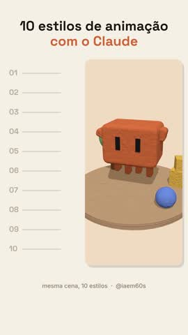

agendado
10 estilos de animação pra pedir pro Claude. Qual é o seu favorito? 🎨
2026-11-05-10-estilos
reel lista + demonstração (formato 2) · tutorial · CTA ESTILO · 1 fonte(s)
Checagem OK
- ✔ Formato: 1080×1920
- ✔ Duração: 18.4 s
- ✔ Velocidade da fala: 2.39 palavras/s (44 palavras)
- ✔ Volume: -14.1 LUFS, pico -1.5 dB
- ✔ Fontes: 1 fonte(s)
- ✔ Prova viral: preenchida
- ✔ Legenda do Instagram: 634 caracteres
- ✔ CTA na legenda: ESTILO
- ✔ Resposta da DM: ok